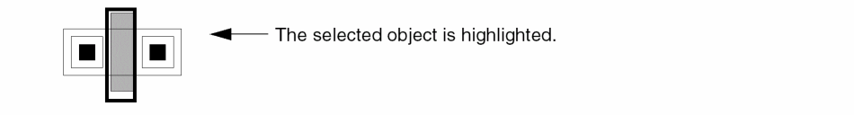
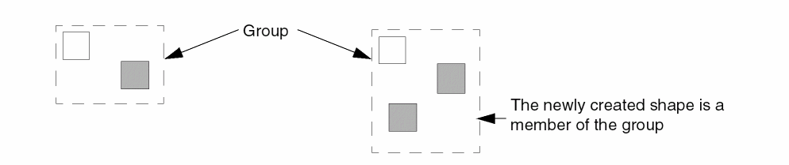
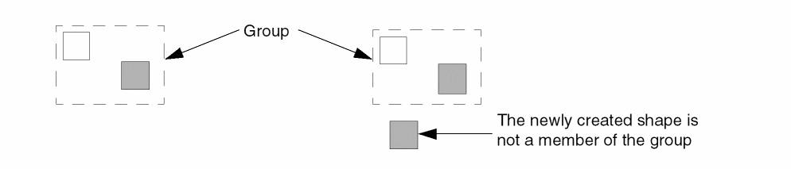
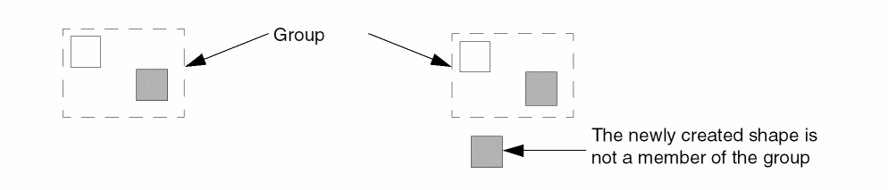

Yanking and Pasting Objects in Pre-Selection Mode
You can pre-select objects before you invoke the Yank command. In pre-selection mode, only fully selected objects are yanked and partially selected objects are ignored.
To use the Yank command to copy an object, group of objects, or an instance:
-
On the layout canvas, select the object that you want to copy.
 - Choose Edit – Basic – Yank.
-
Choose Edit – Basic – Paste.
The outline of the object you yanked appears and follows the pointer. -
Click on the canvas where you want to place the copied object. Continue clicking to place multiple copies.
In pre-selection mode, the Yank command does not support boundaries (PR, snap, area, and cluster), blockages, guides, and steiners. In case the selected set contains any of these objects, a warning message is displayed in the CIW.
You can copy a group of objects as well using the Yank and Paste commands.
- When a group of objects is selected, all the members of the group are yanked. When you paste, the newly created objects become members of the newly created group.
-
When you want to edit the contents of a group (Edit – Hierarchy – Edit In Place), select the shapes that you want to yank. When you paste, the newly created shapes remains a member of the group from which they were copied.
-
When you want to edit the contents of a group (Edit – Hierarchy – Edit In Place), select the shapes that you want to yank. When you paste after you return (Edit – Hierarchy – Return to Level), the newly created shape is not a member of the group from which it was copied.
-
When the transparent group mode is enabled, select the shapes that you want to yank. When you paste, the newly created shape is not a member of the group from which it was copied.
For information about how parent-child relationship behaves when either the parent or the child is yanked, see Attaching and Detaching Objects.
If you are editing a cell instance in place, you can select the objects to be yanked and then paste these objects. You can also paste in the top cellview even after you return from Edit In Place, using Edit - Hierarchy - Return.
Related Topics
Return to top